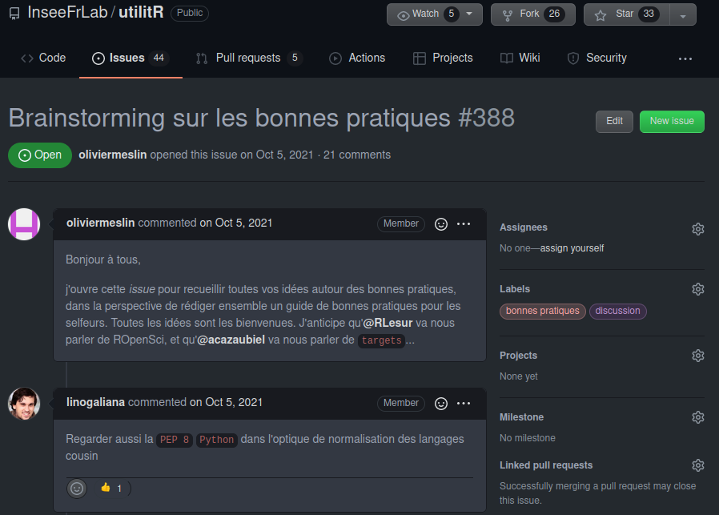
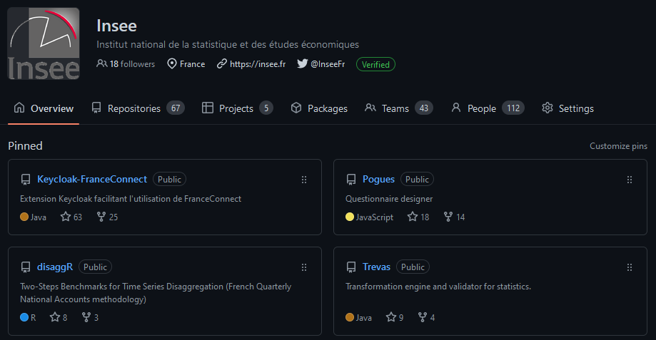
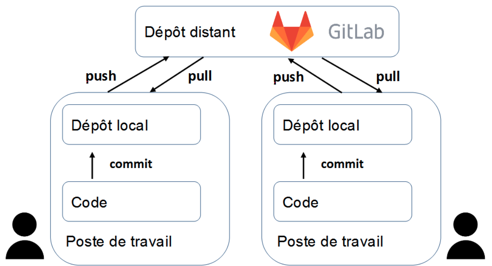
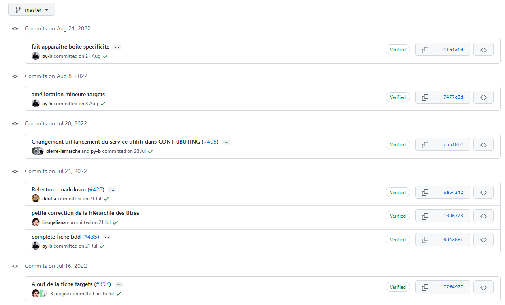

Bonnes pratiques pour les projets statistiques
Une formation aux bonnes pratiques avec Git et R
Introduction
La notion de bonnes pratiques
- Origine : communauté des développeurs logiciels
- Constats :
- le “code est plus souvent lu qu’écrit” (Guido Van Rossum)
- la maintenance d’un code est très coûteuse
- Conséquence : un ensemble de règles informelles, conventionnellement acceptées comme produisant des logiciels fiables, évolutifs et maintenables
Pourquoi s’intéresser aux bonnes pratiques ?
L’activité du statisticien / datascientist tend à se rapprocher de celle du développeur :
- projets intenses en code
- projets collaboratifs et de grande envergure
- complexification des données et donc des infrastructures
- déploiement d’applications pour valoriser les analyses
Bonnes pratiques et reproductibilité

Source : Peng R., Reproducible Research in Computational Science, Science (2011)
- Une reproductibilité parfaite est coûteuse
Gitest un standard atteignable et efficient
Note
Quel socle de bonnes pratiques pour les projets statistiques en R ?
Partie 1 : contrôle de version avec Git
Plan de la formation
1️⃣ Le contrôle de version : pourquoi faire ?
2️⃣ Le contrôle de version avec Git
I- Le contrôle de version : pourquoi faire ?
1️⃣ Archiver son code proprement
pour en finir avec ça :

1️⃣ Archiver son code proprement
ou ça :

1️⃣ Archiver son code proprement
ou encore ça :
prior <- read_csv(prior_path)
prior <- prior %>%
select(id, proba_inter, proba_build, proba_rfl) %>%
separate(id, into = c('nidt', 'grid_id'), sep = ":") %>%
group_by(nidt) %>%
mutate(
proba_build = proba_build/sum(proba_build),
proba_rfl = proba_rfl/sum(proba_rfl),
) %>%
unite(col = "id", nidt, grid_id, sep = ":")
# Test
# prior_test <- prior %>%
# mutate(
# proba_inter = round(proba_inter, 4)
# proba_build = round(proba_build, 4)
# proba_rfl = round(proba_rfl, 4)
# )
write_csv(prior_round, "~/prior.csv")1️⃣ Archiver son code proprement
Pour arriver à ça :

Source : ThinkR
2️⃣ Voyager dans le temps (de votre projet)

3️⃣ Une collaboration simplifiée et efficace
Un modèle distribué

Source : specbee.com
3️⃣ Une collaboration simplifiée et efficace
Qui permet l’expérimentation en toute sécurité

Source : lutece.paris.fr
3️⃣ Une collaboration simplifiée et efficace
Quel que soit l’environnement de travail

3️⃣ Une collaboration simplifiée et efficace
Avec des outils pour faciliter la collaboration

4️⃣ Partager son code à un public large
Une vitrine pour les projets et l’organisation

En résumé
- Construire et naviguer à travers l’historique de son projet
- La collaboration rendue simple et efficace
- Améliorer la reproductibilité de ses projets
- Améliorer la visibilité de ses projets
II- Le contrôle de version avec Git
⚠️ Git est complexe
L’utilisation de Git nécessite certaines notions préalables:
- Fonctionnement d’un
filesystem - Connaissance basique du terminal
Linux - Potentiellement, un grand nombre de commandes

⚠️ Git est complexe
Mais
- L’usage quotidien n’implique que quelques commandes
- Enormément de ressources disponibles sur internet
- Des interfaces visuelles (ex:
RStudio,Sublime Merge,VS Code) qui facilitent l’apprentissage - Un petit investissement individuel pour de gros gains collectifs
Concepts
Git, GitHub, GitLab… quelles différences ?
Gitest un logiciel ;- Utilisation en ligne de commandes
- Différentes interfaces graphiques (
RStudio,VS Code…)
Concepts
Git, GitHub, GitLab… quelles différences ?
GitHubetGitLabsont des forges logicielles- Forge: espace d’archivage de code
- Des fonctionalités supplémentaires : réseau social du code
Tip
GitHub: utilisation pour les projets open-sourceGitLab: utilisation pour les projets internes
Concepts
Dépôt local / dépôt distant (remote)

- Par défaut, le dépôt distant porte l’alias
origin
Concepts
Workflow local

Source : Git Documentation
Concepts
Workflow complet

Commandes essentielles
| Action | Commande |
|---|---|
| Cloner un projet | git clone [url-to-git-repo] |
| Afficher les changements | git status |
| Retrouver l’URL du dépôt distant | git remote -v |
Commandes essentielles
| Action | Commande |
|---|---|
Ajouter des changements à l’index de Git |
Un seul fichier : git add <file-name> Tous les fichiers déjà indexés : git add -u Tous les fichiers ⚠️ : git add -A |
Warning
La méthode git add -A peut amener à suivre les modifications de fichiers qui ne devraient pas l’être (par exemple, des données).
Il est recommandé de bien réfléchir avant de l’utiliser (ou d’avoir un bon .gitignore)
Commandes essentielles
| Action | Commande |
|---|---|
Faire un commit |
git commit -m "message" |
Pousser les changements locaux (branche master) |
git push origin master |
Récupérer les changements distants (branche master) |
git pull origin master |
Modes d’authentification
- https
git clone https://github.com/username/projet.git- simple à utiliser
- authentification username/token à chaque push
- ssh
git clone git@github.com:username/projet.git- (plus) complexe à initialiser
- authentification automatique
Application 0
Préparation de l’environnement de travail
- Créer un compte
GitHub - Créer un nouveau dépôt privé sur
GitHub - Créer un compte sur le SSP Cloud
- Lancer un service
RStudio. Dans l’onglet de configurationGitdu service, fixer la durée duCachepour le stockage des identifiantsGitHubà une valeur suffisamment élevée - Cloner le dépôt distant sur votre environnement local (ici, le
RStudioduDatalab):File→New project→Version Control→Git
- Générer un token (jeton d’authentification) sur
GitHub - Stocker le token sur le
SSP Cloud(ou un gestionnaire de mot de passe) :Mon Compte->Services externes->Jeton d'accès personnel GitHub
- Terminer la procédure de clonage en fournissant le nom d’utilisateur
GitHubet le token
❓ Question : qu’est ce qui différencie le projet cloné d’un projet quelconque ?
Application 1
Premiers commits
- Créer un dossier 📁
scripts - Y créer les fichiers
script1.Retscript2.R, chacun contenant quelques commandesRde votre choix - Ajouter ces fichiers à la zone de staging de Git en les cochant dans l’interface
RStudio - Effectuer un
commit, auquel on donnera un message descriptif pertinent - Supprimer le fichier
script1.Ret modifier le contenu du fichierscript2.R - Analyser ce qui se passe lorsque l’on coche ces fichiers dans l’interface
RStudio - Effectuer un nouveau commit pour ajouter ces modifications à l’historique
- Visualiser l’historique du projet à partir de l’interface graphique de
RStudio
❓ Question : à ce stade, le dépôt du projet sur GitHub (remote) a-t-il été modifié ?
Application 2
Interactions avec le dépôt distant
- Effectuer un
pushpour intégrer les changements locaux au projet distant - Parcourir l’historique du projet sur
GitHub- Faire apparaître les différences entre deux versions consécutives du projet
- Afficher une version passée du projet
Bonnes pratiques
Que versionne-t-on ?
- Essentiellement du code source
- Pas d’outputs (fichiers
.html,.pdf, modèles…) - Pas de données, d’informations locales ou sensibles
Note
Pour définir des règles qui évitent de committer tel ou tel fichier, on utilise un fichier nommé .gitignore.
Si on mélange du code et des éléments annexes (output, données…) dans un même dossier, il faut consacrer du temps à ce fichier.
Le site gitignore.io peut vous fournir des modèles.
N’hésitez pas à y ajouter des règles conservatrices (par exemple *.csv), comme cela est expliqué dans la documentation utilitR.
Bonnes pratiques
Format des commits
- Fréquence
- Aussi souvent que possible
- Le lot de modifications doit “faire sens”
- Messages
- Courts et informatifs (comme un titre de mail)
- Décrire le pourquoi plutôt que le comment dans le texte

Application 3
Le fichier .gitignore
Lors de la création du projet sur GitHub, nous avons demandé la création d’un fichier .gitignore, qui se situe à la racine du projet. Il spécifie l’ensemble des fichiers qui seront toujours exclus de l’indexation faite par Git.
- Exclure les fichiers de type
*.pdfet*.html - Créer un dossier
dataà la racine du projet et créer à l’intérieur de celui-ci un fichierdata/raw.csvavec une ligne de données quelconque - Ajouter au
.gitignorele dossierdata/ - Vérifier que toutes les règles ajoutées précédemment fonctionnent comme attendu
❓ Question : que se passe-t-il lorsque l’on ajoute au .gitignore des fichiers qui ont déjà été commit sur le projet Git ?
Ressources supplémentaires
- Pour aller plus loin:
- Formation Travail collaboratif avec
R - Cours Reproductibilité et bonnes pratiques pour les projets de data science de l’
ENSAE - La documentation
utilitRpropose plusieurs chapitres surGit - La Bible
- Formation Travail collaboratif avec
- Trouver de l’aide:
- Pour toute question : le salon Tchap Insee-Git-Gitlab
- A l’Insee : la [documentation utilisateurs] pour l’utilisation de
GitsurAUS - Sollicitez vos collègues utilisateurs de
Git!
Partie 2 : bonnes pratiques avec R
Plan de la partie
Améliorations graduelles dans l’échelle de la reproductibilité :
1️⃣ Qualité du code
2️⃣ Structure des projets
3️⃣ Formats de données
Application 0
Préparation de l’environnement de travail
- Si vous ne l’avez pas fait lors de la première partie de la formation, créer un compte sur GitHub et générer un token (jeton d’accès) d’authentification
- Créer un nouveau dépôt public sur GitHub
- Lancer un service
RStudio. Dans l’onglet de configurationGitdu service, fixer la durée duCachepour le stockage des identifiantsGitHubà une valeur suffisamment élevée - Cloner le dépôt distant sur votre environnement local (ici, le
RStudioduDatalab):File→New project→Version Control→Git
- Créer un script
get_data.Ren copiant le contenu de ce fichier, puis l’exécuter - Créer le script
script.Rdans votre dépôt en copiant le contenu de ce fichier - Ajouter la règle “individu_reg.*” au fichier
.gitignore. Que signifie-t-elle ? - Commit/push les changements
I- Qualité du code
Enjeux
- D’une vision utilitariste du code à une vision du code comme outil de communication
- Favoriser la lisibilité et la maintenabilité
- Faciliter la réutilisation
- Assurer la transparence méthodologique
Principes généraux
- Adopter les standards communautaires
- Utiliser des fonctions
- Documenter son code
- Indiquer les packages utilisés afin d’éviter les conflits
1️⃣ Adopter les standards communautaires
“Good coding style is like correct punctuation: you can manage without it, butitsuremakesthingseasiertoread”
- Respecter les conventions du langage dans lequel il est rédigé
- Il existe un guide de référence pour bien coder en
R: le Tidyverse style guide.
1️⃣ Adopter les standards communautaires
Deux outils pratiques aident à respecter les standards :
- linter : programme qui vérifie que le code est formellement conforme à un certain guidestyle
- signale problèmes formels, sans corriger
- formatter : programme qui reformate un code pour le rendre conforme à un certain guidestyle
- modifie directement le code
Tip
- Exemples d’erreurs repérées par un linter :
- lignes de code trop longues ou mal indentées, parenthèses non équilibrées, noms de fonctions mal construits…
- Exemples d’erreurs non repérées par un linter :
- fonctions mal utilisées, arguments mal spécifiés, structure du code incohérente, code insuffisamment documenté…
1️⃣ Adopter les standards communautaires
Dans le cas de :
2️⃣ Utiliser des fonctions
Règle d’or
Il faut utiliser une fonction dès qu’on utilise une même portion de code plus de deux fois (don’t repeat yourself (DRY))
- Limite les risques d’erreurs liés aux copier/coller
- Rend le code plus lisible et plus compact
- Un seul endroit du code à modifier lorsqu’on souhaite modifier le traitement
- Facilite la réutilisation et la documentation du code !
Règles pour écrire des fonctions pertinentes
- Une tâche = une fonction
- Une tâche complexe = un enchaînement de fonctions réalisant chacune une tâche simple
- Limiter l’utilisation de variables globales.
3️⃣ Documenter son code
- Grands principes :
- Documenter le pourquoi plutôt que le comment
- Privilégier l’auto-documentation via des nommages pertinents.
Comment bien documenter un script ?
- Minimum 🚦 : commentaire au début du script pour décrire ce qu’il fait
- Bien 👍 : commenter les parties “délicates” du code
- Idéal 💪 : documenter ses fonctions avec la syntaxe
roxygen2.
4️⃣ Pas d’ambiguïté sur les packages utilisés
- Deux fonctions peuvent avoir le même nom dans des packages différents
Rutilise par défaut la librairie chargée le plus récemment
- Erreurs difficiles à repérer car il est nécessaire d’exécuter le code
- Recommandation : indiquer explicitement le package : notation
package::fonction()- Exemple :
dplyr::filter()
- Exemple :
Exemple
package1etpackage2contiennent chacun une fonction appeléesuperFonction.- Si
package2est chargé aprèspackage1, alorssuperFonctiondésigne par défaut la fonction depackage2. - Mieux vaut noter
package1::superFonctionetpackage2::superFonction
Ressources supplémentaires
- Un cours complet sur la reproductibilité avec
R - Une présentation très complète sur le partage de code et de données avec
R - L’équivalent
Pythonen 3A d’ENSAE
Application 1
Partie 1 : vérification du bon fonctionnement du code
Un code reproductible est avant toute chose un code fonctionnel ! Repérez les erreurs qui empêchent le script script.R de s’exécuter correctement, et les corriger.
Application 1
Partie 2 : premiers standards de qualité
- Installer les packages
Rlintretstyler. - Définir le linter à utiliser comme étant de type
tidyverse:lintr::use_lintr(type = "tidyverse") - Diagnostiquer le script
script.R:lintr::lint("script.R").- Comprenez-vous la nature des problèmes détectés par le linter?
- Appliquer le formatter au
script.R:styler::style_file("script.R"). - Refaire tourner le linter. Il reste encore un certain nombre d’erreurs de formattage, car
stylerest un formatter peu intrusif. - Regarder les différents problèmes repérés par le linter, et en corriger quelques uns (un pour chaque type de problème).
Application 1
Partie 3 : une meilleure gestion des packages utilisés
- Limiter les ambiguités sur les packages en utilisant la syntaxe
package::fonctionpour les packages rarement utilisés dans le script. - L’installation des packages dans un script n’est pas une bonne pratique. Supprimer les instructions correspondantes.
- Importer le
tidyverseau complet est rarement utile. N’importer à la place que les packages effectivement utilisés dans le script.
Application 1
Partie 4 : (auto-)documentation du code
- Déplacer les
librarypour les mettre tous ensemble au début du script. - Le script n’est pas construit dans un ordre logique. Déplacer les parties pour adopter une structure plus logique :
- Gestion de l’environnement -> Définition de fonctions -> Import des données -> Retraitement des données -> Statistiques descriptives -> Graphiques -> Modélisation
- Donner des titres aux parties/sous-parties en utilisant les standards de documentation reconnus par RStudio :
# TITRE NIVEAU 1 ------------et## TITRE NIVEAU 2 ==========
Application 1
Partie 5 : une meilleure gestion des secrets
- Repérer le jeton d’API dans le code. Retirer le jeton d’API du code et créer à la racine du projet un fichier YAML nommé
secrets.yamloù vous écrivez ce secret sous la formekey: value. ⚠️ Attention : le packageyamlimpose la création d’une ligne vierge à la fin du fichier pour être valide. - Dans
script.R, importer ce YAML (avecyaml::read_yaml("secrets.yaml")) pour créer une variableapi_tokenayant cette valeur. - Ajouter dans
.gitignorele fichiersecrets.yamlet indiquer dans leREADME.mdde votre projet que les secrets sont stockés dans ce fichier. ⚠️ Attention : il ne faut pas committersecrets.yamlcar le jeton d’API est personnel et secret!
Checkpoint

Bilan
- Un code mal structuré
- Limite la lisibilité du projet
- Est très coûteux à maintenir (dette technique)

II- Structure des projets
Enjeux
- Favoriser la lisibilité et la maintenabilité
2 Construire des projets reproductibles
⚠️ A ne pas reproduire chez vous
├── report.Rmd
├── correlation.png
├── data.csv
├── data2.csv
├── fig1.png
├── figure 2 (copy).png
├── report.pdf
├── partial data.csv
├── script.R
└── script_final.RSource : eliocamp.github.io
Principes généraux
- Utiliser les projets RStudio
- Organiser son projet en sous-dossiers
- Donner des noms pertinents aux fichiers
- Documenter son projet
- (Faire de son projet un package)
1️⃣ Utiliser les projets RStudio
- Objectif : favoriser la reproductibilité
- Tous les fichiers nécessaires au projet dans un même dossier
- Le dossier contenant le projet RStudio est automatiquement utilisé comme working directory
- Utilisation de chemins relatifs plutôt qu’absolus.
- Bonus : en utilisant
Git, on s’assure de toujours travailler dans un projet RStudio !
2️⃣ Organiser son projet en sous-dossiers
- Objectif : adopter une structure arbitraire, mais lisible et cohérente
├── data
│ ├── raw
│ │ ├── data.csv
│ │ └── data2.csv
│ └── derived
│ └── partial data.csv
├── R
| ├── script.R
│ ├── script_final.R
│ └── report.Rmd
└── output
├── fig1.png
├── figure 2 (copy).png
├── figure10.png
├── correlation.png
└── report.pdf3️⃣ Donner des noms pertinents aux fichiers
- Objectif : auto-documenter son projet
├── data
│ ├── raw
│ │ ├── dpe_logement_202103.csv
│ │ └── dpe_logement_202003.csv
│ └── derived
│ └── dpe_logement_merged_preprocessed.csv
├── R
| ├── preprocessing.R
│ ├── generate_plots.R
│ └── report.Rmd
└── output
├── histogram_energy_diagnostic.png
├── barplot_consumption_pcs.png
├── correlation_matrix.png
└── report.pdf4️⃣ Documenter son projet
- Le fichier
README.md, situé à la racine du projet, est à la fois la carte d’identité et la vitrine du projet
- Idéalement, il contient :
- Une présentation du contexte et des objectifs
- Une description de son fonctionnement
- Un guide de contribution (open-source)
- Quelques modèles de
README.mdcomplets :
5️⃣ Faire de son projet un package
- Un package est la forme maximale de modularité
- Contient des fonctions rangées dans des modules
- Contient également de la documentation, des tests, des (méta-)données…
- Avantages
- Idéal pour favoriser la réutilisation du code
- Des outils de développement :
devtoolsetusethis
- Inconvénients
- Coût de maintenance élevé
Ressources supplémentaires
- La documentation utilitR sur les projets RStudio et les packages R
- La bible des packages R
- Un excellent workshop sur la reproductibilité avec R
Application 2
Partie 1 : modularisation du projet
- Déplacer toutes les fonctions dans un fichier
R/functions.R. - Donner à la fonction
fonction_de_stat_agregeeun nom plus pertinent et des noms d’arguments plus transparents. - Dans
script.R, appeler en début de chaîne ces fonctions avecsource("R/functions.R", encoding = "UTF-8"). - Documenter la fonction principale au format attendu par
roxygen2. - Ajouter les tests unitaires de la fonction comme exemples d’utilisation et les retirer de
script.R. - Tester le bon fonctionnement de
script.R.
Application 2
Partie 2 : création d’un package
- Initialiser un package avec la fonction
usethis::create_package() - Placer dans le dossier
Rdu package un modulestat.Ret y copier la fonction de statistique agrégée - Charger le package avec la fonction
devtools::load_all()et vérifier que la fonction marche correctement - Remplir le fichier
DESCRIPTION. En particulier, spécifier les dépendances nécessaires (Imports) et facultatives (Suggests) - Construire la documentation du package avec la fonction
devtools::document(). Où est-elle stockée et sous quel format ? - Vérifier que la documentation de notre fonction est accessible avec
?ma_fonction - (Facultatif) Initialiser un nouveau projet sur
GitHubest y mettre le code du package. Vérifier que le package peut être installé en local avec la fonctiondevtools::install_github().
Checkpoint
III- Formats de données
Enjeux
- Le choix d’un format de données répond à un arbitrage entre plusieurs critères :
- Finalité (traitement, analyse, diffusion)
- Public cible
- Volumétrie
Recommandations
- Eviter impérativement les formats de données adhérents à un langage (
RDS,RData,fst,sas7bdat, etc.).
- Deux formats à privilégier :
- CSV : pour la plupart des usages courants
- Avantage : non-compressé donc facilement lisible
- Inconvénients : pas de gestion des méta-données, peu adapté aux données volumineuses
- Parquet : pour le traitement de données volumineuses
- Compressé et très performant en lecture/écriture
- Gestion native des méta-données
- CSV : pour la plupart des usages courants
Application 3
Manipulation des formats CSV et Parquet
- Effacer la base
individu_reg.csv - Modifier le script
get_data.Rpour écrire les données au formatParquetà l’aide de la fonctionarrow::write_parquet - Modifier la phase d’import dans
script.Rpour importer le fichierParquetà l’aide de la fonctionarrow::read_parquet
Checkpoint
Conclusion
- Les bonnes pratiques favorisent la reproductibilité et la réutilisation des projets statistiques
- Des outils permettent d’appliquer les bonnes pratiques
- Le coût est d’autant plus faible que l’on se place en amont du projet
- Quel socle de bonnes pratiques pour l’Insee ?
Bonnes pratiques pour les projets statistiques